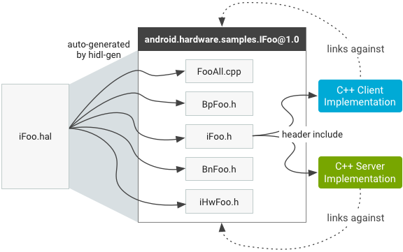

Note: This section uses sample .hal
files to illustrate how HIDL language constructs map to C++.
With few exceptions, HIDL interface packages are located in
hardware/interfaces or the vendor/ directory. The
hardware/interfaces top-level maps directly to the
android.hardware package namespace; the version is a subdirectory
under the package (not interface) namespace.
The hidl-gen compiler compiles the .hal files into
a set of a .h and .cpp files. From these autogenerated
files a shared library that client/server implementations link against is built.
The Android.bp file that builds this shared library is
autogenerated by the hardware/interfaces/update-makefiles.sh
script. Every time you add a new package to hardware/interfaces, or
add/remove .hal files to/from an existing package, you must rerun
the script to ensure the generated shared library is up-to-date.
For example, the IFoo.hal sample file should be located in
hardware/interfaces/samples/1.0. The sample
IFoo.hal file creates an IFoo interface in the
samples package:
package android.hardware.samples@1.0;
interface IFoo {
struct Foo {
int64_t someValue;
handle myHandle;
};
someMethod() generates (vec<uint32_t>);
anotherMethod(Foo foo) generates (int32_t ret);
};
Autogenerated files in a HIDL package are linked into a single shared
library with the same name as the package (for example,
android.hardware.samples@1.0). The shared library also exports a
single header, IFoo.h, which can be included by clients and
servers. Using the hidl-gen compiler with the IFoo.hal
interface file as an input, binderized mode has the following autogenerated
files:

Figure 1. Files generated by compiler.
IFoo.h. Describes the pure IFoo
interface in a C++ class; it contains the methods and types defined in the
IFoo interface in the IFoo.hal file, translated to C++
types where necessary. Does not contain details related to the
RPC mechanism (e.g., HwBinder) used to implement this interface.
The class is namespaced with the package and version, e.g.
::android::hardware::samples::IFoo::V1_0. Both clients and servers
include this header: Clients for calling methods on it and servers for
implementing those methods.IHwFoo.h. Header file that contains
declarations for functions that serialize data types used in the interface.
Developers should never include his header directly (it does not contain any
classes).BpFoo.h. A class that inherits from
IFoo and describes the HwBinder proxy (client-side)
implementation of the interface. Developers should never refer to this class
directly.BnFoo.h. A class that holds a
reference to an IFoo implementation and describes the
HwBinder stub (server-side) implementation of the interface.
Developers should never refer to this class directly.FooAll.cpp. A class that contains the
implementations for both the HwBinder proxy and the
HwBinder stub. When a client calls an interface method, the proxy
automatically marshals the arguments from the client and sends the transaction
to the binder kernel driver, which delivers the transaction to the stub on the
other side (which then calls the actual server implementation).The files are structured similarly to the files generated by
aidl-cpp (for details, see "Passthrough mode" in the
HIDL Overview). The only
autogenerated file that is independent of the RPC mechanism used by HIDL is
IFoo.h; all other files are tied to the HwBinder RPC mechanism used
by HIDL. Therefore, client and server implementations should never
directly refer to anything other than IFoo. To achieve
this, include only IFoo.h and link against the generated shared
library.
Note: HwBinder is only one possible transport; new transports may be added in the future.
A client or server that uses any interface in a package must include the shared library of that package in one (1) of the following locations:
LOCAL_SHARED_LIBRARIES += android.hardware.samples@1.0
shared_libs: [
/* ... */
"android.hardware.samples@1.0",
],
For specific libraries:
libhidlbase |
Includes standard HIDL data-types. Unless your interface consists only of
primitives that map directly to C++ primitives, you must also link this library:
LOCAL_SHARED_LIBRARIES += libhidlbase |
|---|---|
libhidltransport |
Handles the transport of HIDL calls over different RPC/IPC mechanisms. You
must always link this library:
LOCAL_SHARED_LIBRARIES += libhidltransport |
libhwbinder |
You must also link to this library:
LOCAL_SHARED_LIBRARIES += libhwbinder |
libfmq |
To use Fast Message Queue IPC, you must also link to this library.
LOCAL_SHARED_LIBRARIES += libfmq |
HIDL functions and types such as Return<T> and
Void() are declared in namespace ::android::hardware.
The C++ namespace of a package is determined by the package name and version.
For example, a package mypackage with version 1.2 under
hardware/interfaces has the following qualities:
::android::hardware::mypackage::V1_2IMyInterface in that
package is: ::android::hardware::mypackage::V1_2::IMyInterface.
(IMyInterface is an identifier, not part of the namespace).types.hal file
are identified as:
::android::hardware::mypackage::V1_2::MyPackageType